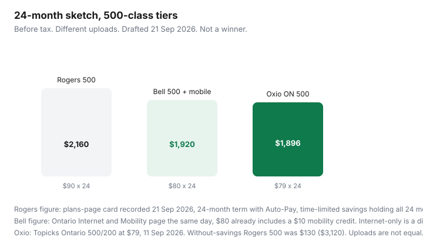

Internet · Canada
Rogers vs Bell Home Internet in Canada: Fibre Uploads, Cable Deals, and Real TCO
Rogers versus Bell is an address question wearing a national headline. One street has Bell glass and Rogers coax. The next has only one of them. The download number on the ad is the least stable part of the bill: uploads, the month the credit dies, the gateway line, and the term decide who is actually cheaper. This is a total-cost template for Canadian households, not a ranking. Education only. Neither company is a partner.
Disclosure: Mesh Wi-Fi is an offer type when the included hub still leaves a dead room. We do not claim a live hardware commission. No Rogers or Bell affiliate relationship is claimed, and none of the prices below are a personal quote.
Key takeaways
- Bell Pure Fibre, where it is actually pure fibre, publishes matched or near-matched uploads. Rogers cards are still, on many streets, cable with a much smaller upload. Confirm both at the address. Rogers also has fibre in parts of its footprint; the brand does not tell you which.
- Dated Ontario anchors, 21 Sep 2026: Bell Internet and Mobility cards at $65 (150/150), $80 (500/500), and $85 (1.5 Gbps/940 up), including a $10 mobility credit. Rogers plans-page cards the same day: Starter 150 $75 vs $110, Popular 500 $90 vs $130, Premier 2 Gig $100 vs $160, 24-month term with Auto-Pay.
- If the Rogers $90 and the Bell-with-mobility $80 both hold for 24 months, the gap is $240 before tax. Rogers without the time-limited savings at $130 is $3,120. The promo cliff is the expensive version of Rogers.
- Equipment is not the same line. Bell’s page includes Giga Hub 2.0. Rogers advertised a $25/month upgrade to the latest modem. Community bills still show a gateway around $10. Ask.
- An independent on the same plant can beat both public cards. Run that quote before either winback call.
Technology map: Bell Fibe FTTH vs Rogers cable/fibre footprint
Draw the street, not the country. In Ontario and Québec, Bell’s fibre-to-the-home build is the reason people compare these two brands at all. In the West, the parallel argument is often Telus PureFibre versus Rogers (including former Shaw) cable, and this page’s Bell dollars should not be pasted onto a Calgary bill. In Atlantic Canada, Eastlink is frequently the cable company in the Rogers chair.
Bell’s product split is in the Fibe playbook: Pure Fibre versus Fibe that still finishes on copper. Rogers’ 21 Sep 2026 internet page marketed “Xfinity,” Wi-Fi 7, and multi-gig speeds without putting the wholesale technology in the hero text. You have to qualify the address and read the upload. A 2-gig Rogers download with a few dozen megabits of upload is cable. A Rogers fibre pass will say so in the quote, or it will show an upload that looks like fibre. Write the technology in the first column of the sheet from the three-quote method.
Upload speed: why WFH and cloud backup change the winner
A household of two video calls does not need Premier 2 Gig. It needs enough upload that the calls survive a backup. Bell’s Ontario page on 21 Sep 2026 shows 500 Mbps up on the 500 tier and 940 Mbps up on 1.5 Gbps. A cable 500 tier is often an order of magnitude less on the upload, sometimes 20–50 Mbps depending on the DOCSIS plan. If that describes your Rogers quote, Bell can be the better buy at a similar monthly rate. If both of you only browse and stream down, you are paying for upload you will not use, and the cheaper cable or reseller tier wins. The speed worksheet keeps this honest.
Promotional vs regular pricing and typical term lengths
| Card | With the offer | Without that saving | Term note |
|---|---|---|---|
| Bell 150/150 + mobility | $65 | Page shows a $15 credit for 2 years inside the offer | 2-year price language; credits can drop if you change services |
| Bell 500/500 + mobility | $80 | Breakdown: $105, minus $15 term, minus $10 multi-service | Same. Autopay setup within 31 days mentioned for the autopay credit |
| Bell 1.5 / 940 + mobility | $85 | $15/month for 2 years shown on the card | Same Ontario new-customer conditions |
| Rogers Starter 150 | $75 | $110 | 24-month term with Auto-Pay on that reading |
| Rogers Popular 500 | $90 | $130 | Same |
| Rogers Premier 2 Gig | $100 | $160 | Same. Upload not stated on the marketing page we fetched |
Internet-only Bell is not the $80 card. The page says the displayed rates already include $10 off for ordering mobility too. A 26 Aug 2026 third-party reading of Ontario internet-only Pure Fibre had Fibe 500 at $90 versus $105 regular, which matches $105 minus the $15 term credit and no mobility credit. Use the product you will actually buy.
Both brands’ “good” prices are term prices. Month-to-month, or the month after the credit, is the other column. CRTC 2026-67’s 90-day warning before a long promo ends is not enforceable until 13 Apr 2027. Calendar it yourself.
Equipment: ONT rental vs gateway/modem line items
Bell fibre needs Bell’s optical terminal. The 21 Sep 2026 Ontario page includes Giga Hub 2.0 with Wi-Fi 7 in the package. A 26 Aug 2026 secondary source cited $249 if that hub is not returned outside Québec, and $150 if you decline self-install when self-install is available. The Bell page we fetched states the $0 / $150 install rule directly.
Rogers: the internet homepage on 21 Sep 2026 offered a $25/month upgrade to the latest modem with Wi-Fi 7, extenders, and a few extras. Separately, household bills in Canadian forums have shown a gateway rental near $10, sometimes waived or credited on a term. Those are not the same line. Ask which one is in the quote, and whether the monthly you were given is all-in. You usually cannot BYO a modem on a Rogers Ignite gateway plan the way you can on some TekSavvy cable tiers. See buy versus rent.
Bundle pressure (Ignite TV / Fibe TV / mobile) and how to unbundle
Rogers’ internet page says you save on TV when it is bundled with internet. It did not put a dollar on that sentence in the text we fetched. Bell’s mobility bundle is the $10 credit above, which is concrete if you wanted Bell wireless anyway. Fibe TV and Ignite TV are television products with their own promo clocks. Add them only after the internet-only 24-month total is on paper. The worksheet is bundles worth it. A mobile discount that forces a worse phone plan is not a home-internet save.
Worked 24-month cost comparison template
Copy this. Replace every figure with the cart from today.
| Line | Rogers Popular 500 | Bell 500 with mobility credit | Your third quote |
|---|---|---|---|
| Download / upload | 500 / ask them | 500 / 500 | |
| Offer monthly | $90 | $80 | |
| Months that offer lasts | 24 if the term saving holds | 24 if credits hold | |
| Price after | $130 on that card | Credits can fall off; page warned changes drop them | |
| Equipment monthly | $0, $10, or $25. Ask | Hub included on that page | |
| 24-month service total if offer holds | $2,160 | $1,920 | |
| 24-month if you pay the without-savings rate the whole time | $3,120 | Do not guess. Use the post-credit line from your email |

Oxio’s Ontario 500/200 row from 11 Sep 2026 ($79, no term) is $1,896 over 24 months if that price is really ongoing. It is on the chart as a third column, not as a verdict. TekSavvy Cable 500 at $75.95 then $110.95 is $911.40 + $1,331.40 = $2,242.80 if you coast, which loses to both offer prices and beats Rogers at $130. Re-shopping TekSavvy changes it again. That is why the third column is blank until you qualify the address.
When an independent on the same plant beats both
Add the independent before you call winback. If Oxio or TekSavvy qualifies on Rogers or Cogeco plant, or a Bell-family flanker qualifies on Bell fibre, their 24-month number is the BATNA in the Rogers or Bell call. The independent wins outright when:
- the written 24-month all-in is lower;
- upload is enough for your worksheet, not for a billboard;
- you can live with chat or a phone queue instead of a store;
- you are not trapped by an ETF that costs more than the save. Price the fee with the ETF guide.
Bell wins when the upload is the job and the locked fibre price is close. Rogers wins when it is the only fast plant, or when a documented winback undercuts fibre and you do not need symmetrical upload. Everybody else is renting a logo.
Sources & date stamps
- Bell.ca Internet and Mobility — fetched 21 Sep 2026. Ontario new residential. $65 / $80 / $85 cards, Fibe 500 breakdown, install rule, credit-loss warning.
- Rogers plans-page tiers — $75/$110, $90/$130, $100/$160, recorded 21 Sep 2026 in the Rogers winback guide. Rogers.com/internet the same day: $25 modem-upgrade line and a TV-bundle prompt, without repeating the tier table in the fetch.
- internetadvice.ca — Ontario internet-only Pure Fibre snapshot 26 Aug 2026, used only as a cross-check that $105 minus $15 is $90.
- Topicks.ca 11 Sep 2026 — Oxio Ontario 500/200 at $79; TekSavvy Cable 500 at $75.95 then $110.95.
- CRTC Internet Code and CRTC 2026-43 / 2026-67 — ETF, promo disclosure, 13 Apr 2027 notice enforcement. Not legal advice.
Frequently asked questions
Who wins, Rogers or Bell?
Whoever is actually at the civic address with the upload you need, at the lower 24-month total after equipment and after the promo. There is no national winner. Many streets have only one of them.
Is Bell always symmetrical?
Pure Fibre tiers on Bell's Ontario Internet and Mobility page (21 Sep 2026) show matched uploads on 150, 500, 3 Gbps, and 8 Gbps, and 940 Mbps up on the 1.5 Gbps tier. Legacy Fibe that finishes on copper often does not. Read the quote.
Are the prices below what I will pay?
They are dated public cards for new Ontario customers, plus Rogers plans-page figures recorded the same day in our winback guide. Québec, Atlantic, Manitoba, and existing-customer offers differ. Winbacks can be lower. Re-check both sites before you order.
Does CRTC 2026-43 mean I can leave a 24-month term for free?
No. That policy generally bans activation and no-visit change fees, and it bans wireless ETFs when there is no phone subsidy. A disclosed home-internet ETF can still apply and must decline to $0 by 24 months or the end of the term, whichever logic your contract uses under the Internet Code.
When does an independent beat both?
When TekSavvy, Oxio, Fizz, or another reseller qualifies on the same plant and the 24-month all-in price is lower, and you accept their support model. Put that quote in the sheet before you call either winback desk.